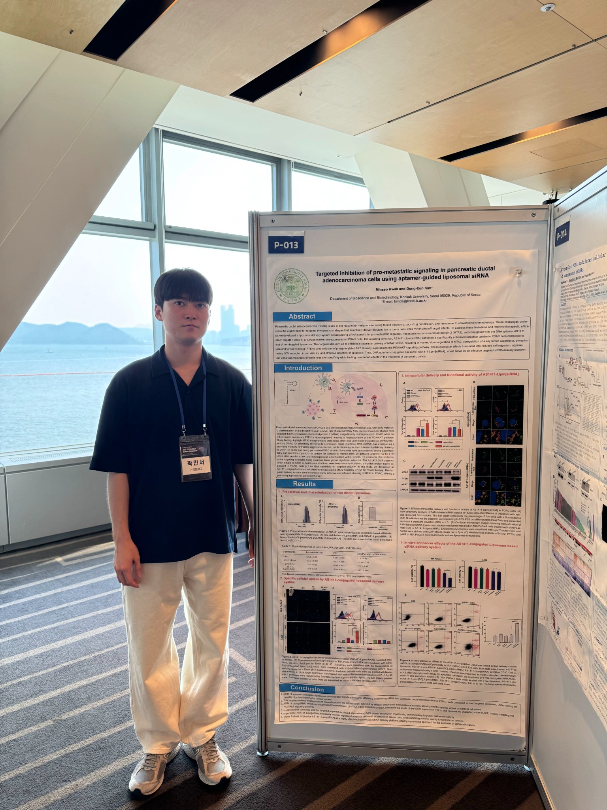

Presentation 01
2025 KSMCB Ribonucleic Acid Division Summer Symposium
Experience
I presented my research on aptamer-guided liposomal siRNA delivery for pancreatic ductal adenocarcinoma at the 2025 Summer Symposium of the Ribonucleic Acid Division, Korean Society for Molecular and Cellular Biology. The poster allowed me to communicate the therapeutic rationale, experimental workflow, and key findings of my main project to researchers in the RNA biology field. Feedback from this symposium helped me refine the research and develop it into a peer-reviewed publication.
Takeaway
I gained experience explaining my research to a broader scientific audience, receiving feedback from researchers, and refining how I communicate the significance of targeted RNA delivery systems.